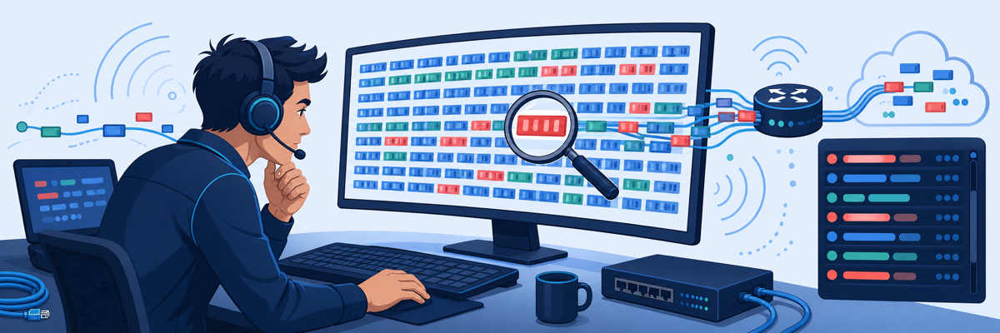
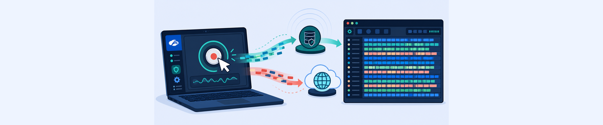
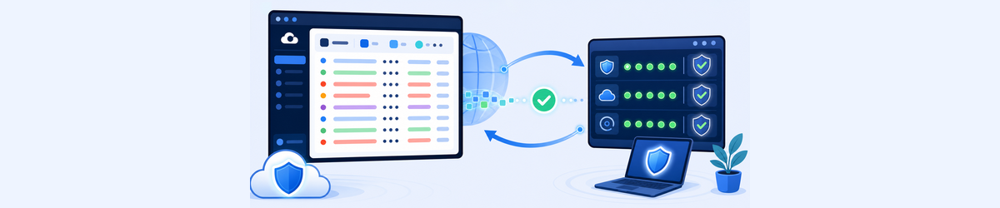

Lab 3: Troubleshooting Traffic Forwarding
Scenario: A user reports intermittent connectivity issues accessing both internet sites and private applications. You will use ZCC’s built-in packet capture tool to capture live traffic, analyse the captures in Wireshark, and then cross-reference with portal logs to identify the problem layer.

ZCC produces two capture files from the same session. Knowing the difference — and which one to open for which question — is the skill that separates slow triage from fast diagnosis.
- ZCC exports two pcapng files: CaptureAdapters and CaptureLWF. What does each one capture, and which one would you open to see an unencrypted HTTP request to a private application?
- The ZPA virtual IP subnet is
100.64.1.0/24. Why does filtering on this subnet in Wireshark reveal private application traffic, and what would you expect to see if ZPA is working correctly? - The CaptureAdapters file shows mostly DTLS-encrypted packets. If you wanted to confirm which internet host a user visited, what Wireshark filter and column would you look at?
Task 3.1: Check Traffic Forwarding with Packet Capture
1 Start a Packet Capture in ZCC
- Open the Zscaler Client Connector application on the Corp: Client PC.
- Click More (bottom of the left sidebar).
- Under the Troubleshoot section, click Start Packet Capture. Leave all options at their defaults and click Start.
- The button changes to Stop Packet Capture with a "Capturing…" indicator — the capture is now running.
2 Generate Sample Internet and Private Application Traffic
- Open a browser on the Corp: Client PC and perform a public transaction:
- Navigate to
https://ip.zscaler.com— this confirms internet traffic is being forwarded to a Zscaler data centre.
- Navigate to
- Perform a private application transaction:
- Navigate to
http://owncloud.thezerotrustexchange.com— this is a private ZPA-protected application.
- Navigate to
3 Export the Packet Captures
- Return to the ZCC More page and click Stop Packet Capture.
- Click Export Logs.
- Save the exported log archive to a convenient location — e.g. the Desktop.
- Extract the ZIP archive and navigate into the extracted folder. Identify the two capture files:
CaptureAdapters_<datestamp>.pcapng— traffic on the physical network adapters (outside the tunnel)CaptureLWF_<datestamp>.pcapng— traffic inside the ZPA tunnel (application-layer view)
4 Analyse the LWF Capture in Wireshark (ZPA Traffic)
- Open the CaptureLWF file in Wireshark.
- Filter the display to show only ZPA virtual IP traffic:
- Type
ip.addr == 100.64.1.0/24in the Wireshark display filter bar and press Enter.
- Type
- Examine the HTTP GET request to
owncloud.thezerotrustexchange.com. This demonstrates that you can see the actual application-layer request inside the ZPA tunnel — confirming the client can communicate with the private server. - Change the display filter to
dnsand find the DNS query response forowncloud.thezerotrustexchange.com. Note that the response returns a100.64.x.xaddress — this is the ZPA virtual IP that routes the connection through the App Connector.
Note: The CaptureLWF view shows traffic inside the tunnel. This distinguishes a ZPA tunnelling issue (no traffic at this layer) from an application issue (traffic present but returning errors).
5 Analyse the Adapters Capture (Internet Traffic)
- Open the CaptureAdapters file in Wireshark.
- Notice that most traffic is DTLS-encrypted — this is the Zscaler tunnel carrying internet traffic. You cannot read the content, which is by design.
- Filter the display to exclude DTLS and see the supporting transactions:
- Type
!dtlsin the filter bar. The remaining packets include DNS, SSDP, and ZCC control-plane communications.
- Type
- Find the HTTP transaction for the public web test:
- Type
tcp.port==80in the filter bar. - Find the HTTP GET request to
ip.zscaler.com. - Right-click the request and select Follow > TCP Stream to see the full HTTP conversation — request headers, Host, and response body.
- Type
Note: The DTLS encryption in CaptureAdapters is expected and not a problem — it means the Zscaler Z-Tunnel 2.0 is working correctly. Use the !dtls filter and DNS logs to confirm which hosts were contacted.

Task 3.2: Use Additional Tools to Check Traffic Forwarding
6 Check ZIA Web Insights Logs
- In the ZIA Admin portal, go to Analytics > Web Insights > Logs.
- Add filters to zero in on the previously accessed website:
- URL Search: Host — Contains —
ip.zscaler.com - User: Include —
ptcb32-IT@thezerotrustexchange.com
- URL Search: Host — Contains —
- Review the log details. Click the column customiser icon (⋮) and add the Response Code field to the table — error response codes (e.g.
504 Gateway Timeout) would indicate a forwarding problem rather than a block.
7 Verify Additional Forwarding Indicators
- To check the tenant’s provisioned domains, go to Administration > Company Profile and verify the domain(s) are configured correctly.
- To check which PAC file was applied to the device, search the ZSATunnel logs (in the exported ZCC log bundle) for a line containing: "App profile pac type, path".
- To check the content of the applied PAC file, go to Administration > Hosted PAC Files in the ZIA Admin portal and review the configured PAC file rules.
- To verify that the issue is not related to a specific Zscaler data centre, check the trust pages at
https://trust.zscaler.comfor any active incidents affecting your cloud region. - To check ZPA connectivity logs, go to Dashboard > Diagnostics in the ZPA Admin portal. Add a filter for the IT department username and review the connection log — note the Access Policy Name, Service Edge, App Connector, and Application field for each connection.
- To test direct connectivity from an App Connector to a private application, go to Dashboard > Diagnostics > Support Information in the ZPA Admin portal and click + to create a new support session with a DNS Lookup or ICMP Ping command to
owncloud.thezerotrustexchange.com.Note: Your ZPA portal access is View-Only in this lab. You can explore the session configuration options but cannot save or run the session.

ip.addr==100.64.1.0/24 for ZPA private app traffic, and dns to see what private app resolved to. Use !dtls in CaptureAdapters to strip tunnel noise. For portal-side verification: ZIA Web Insights for internet logs, ZPA Diagnostics for private app access logs.